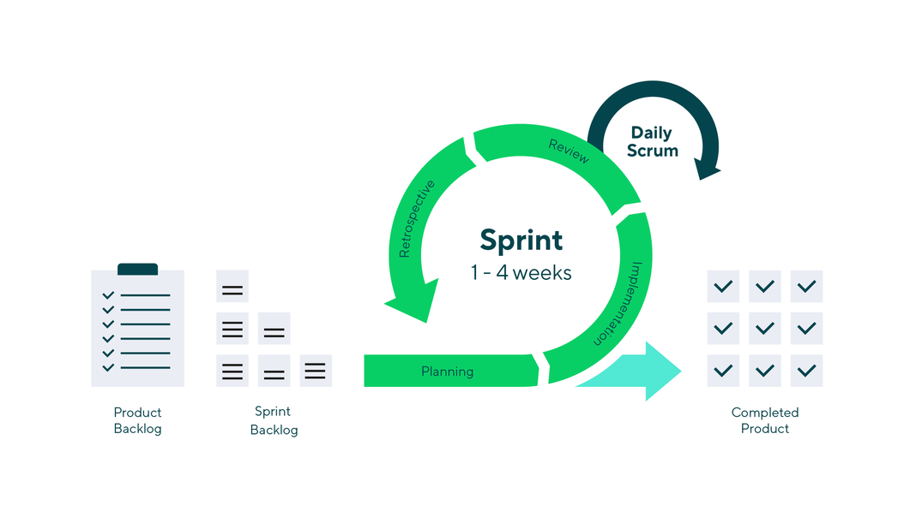

1.4 Collaboration and reproducibility
Contents
1.4 Collaboration and reproducibility¶
As a final part of this first module, we will discuss a series of best practices for collaborative coding in a research project. We will not focus on the different aspects of version control as these topics are extensively covered in other resources offered at the Turing, for instance as part of the RSE Course and The Turing Way. Instead we will go through a few topics from the software development community, which are important when doing data science collaboratively.
Git Flow and Pull Requests¶
When setting up a new project, and especially when you are working collaboratively, you might want to consider following a branching model such as Git Flow, where different branches have specific roles and it is clearly defined when and how they should interact. This will facilitate collaboration, testing and code reviews. Note that this is not the only type of workflow and GitHub workflow is another established option.

Main Branches¶
In Git Flow two branches will record the entire history of the project and have an infinite lifetime:
Main: which contains the release history
Develop: which is the integration branch for features.
When creating a new project we suggest to create the Develop branch (Main will be there from the beginning) and to change the default branch to Develop.
Feature Branch¶
Every time a new feature is planned or a bug / problem needs to be addressed we suggest to first document it in a specific issue, which specifies the problem and the type of expected outcome. Remember that it is very important that issues are focused on a specific and contained task and clearly described.
If a collaborator would like to address this, they should open a dedicated feature branch (from Develop). On GitHub each issue is identified with a number and it is important to be consistent with naming conventions of branches to keep a consistent overview. For instance see the following example.
A few important things for a person addressing an issue:
Take your time to study the code and design an idea for addressing the problem, before starting the implementation
Some issues may request several steps. You should address each step in a different commit in your branch (with a clear descriptive comment). This is useful so that you can later point to a specific commit during the code review process
When you feel you are in a good stage and would like to receive feedback, you can open a pull request (even in draft mode, to signal that is still a work in progress)
Pull Requests¶
A Pull Request (PR) allows the possibility of merging the code back to the Develop branch. You can open it from the GitHub web interface as in the example below. Once a pull request is opened by a collaborator, you can discuss and review the potential changes with them and they can add follow-up commits if necessary before the changes are merged into Develop.
Some important points for the person addressing an issue and opening the PR:
Remember that your work doesn’t need to be completely finished (especially for complex PRs), but you might have an initial workflow for a solution and now it’s the time that someone else could look at your code.
Introduce your PR with a clear description, pointing to the issue this PR would close, the main component of your solution, the tests you have done, etc.
Try to put yourself in the reviewer’s shoes: the solution you would like to review should be simple (not clever!), not too long and especially comprehensible. For instance, if you have added new code, spend time renaming variables so that they are consistent with the overall style.
Some important points for the person reviewing the PR:
First of all, remember to be nice and polite with your collaborator, it is stressful for anyone to have their code reviewed.
Read the issue the PR is planning to address
Go through the proposed solution, you will be able to see an overview of all modifications from the
Files changedtabWhen you have understood the proposed solution, checkout the branch of the PR and test the code
Ask questions if something is not clear. You can do this by adding the comment exactly at the line in the code you are referring to, from the
Files changedtab. You could either add this as a single comment orStart a review. Start a review will hold all your comments, until you have finished your review and then show these to the Collaborator together with the overall feedback.Both the reviewer and the contributor will be able to point to specific commits by writing its SHA-hash, and it’ll automatically get turned into a link (see the example below).
When you are satisfied with a change or a reply of a comment you can resolve it, so you will keep open only comments that still need to be resolved.
When you have finished you can add an overall feedback and your decision. Unless there are clear bugs that need a
Request changes, most of the time a generalCommentwill give your collaborator the chance to discuss and address the feedback in conversation with you.When all things have been addressed, if you are satisfied with the PR you can proceed by merging it and closing the dedicated branch.
Other types of branches¶
Apart from dedicated feature branches and the long-running Develop and Main branch, there are other important branches in the Git Flow model:
Release: Once you are approaching a point when you would like to do a first public release of your code (for instance, when you are submitting a paper and you want to accompany it with the code to reproduce the experiments), you can create a dedicated release branch. Creating this branch starts a “release cycle”, so no new features can be added after this point, only bug fixes, documentation generation, and other release-oriented tasks should go in this branch. Once it’s ready, the release branch gets merged into main and tagged with a version number. In addition, it should be merged back into develop, which may have progressed since the release was initiated. Using a specific, dedicated branch to prepare releases makes it possible to polish the current release while others continue working on features for a future release. It also creates well-defined phases of development.
Hotfix: Maintenance or “hotfix” branches are used to quickly fix issues directly in the main branch. They are very similar to release branches and feature branches except they’re based on main instead of develop. As soon as the fix is complete, it should be merged into both main and develop, and main should be tagged with an updated version number.
Agile Working¶
In software development “Agile” is a set of practices designed for improving the effectiveness of collaborative working, pivoting around flexibility.
Its principles include prioritizing individuals and interactions over processes and tools, and responding to change instead of blindly following preset plans.
While we are not covering Agile principles as part of our course, we will discuss a few strategies that are important as part of a collaborative research data science work.
Scrum¶
In software development, Scrum is a lightweight framework built following Agile principles. It requires a “Scrum Master” to foster an environment where:
A person (the “product owner”) orders a specific product
A team focuses on a specific aspect of the work during a Sprint.
The team and its stakeholders inspect the results and adjust for the next Sprint.
Repeat
 Image link
The cadence of each iteration is very short, with Sprints of two to max four weeks, with clear start and finish dates. Sprints are punctuated by the sprint planning, sprint review, and retrospective meetings and peppered with daily scrum(stand-up) meetings. Such steps are lightweight and run on a continuous basis.
When employing such concepts in a Research Data Science project, the focus will be on:
Splitting the complex work that you want to achieve into small-scale specific tasks with a clear outcome.
Sprint planning with the researchers and domain experts (the equivalent of the “product owner”) in short focused meetings (max 30 mins), to defining the goal of each sprint (which specific task you want to address) and the duration. Everyone needs to agree, so that expectations are aligned.
During the sprint it is important to have regular, short and effective checks with collaborators (as stand-ups meetings) and regular touch-base with the researchers to highlight: what has been done, what we are planing to do, which blockers we have found.
At the end of each sprint it is essential to discuss results, difficulties and to improve the planning of the next sprint.
Kanban board¶
Kanban helps visualise your work, limit the amount of work-in-progress (WIP) and rapidly moving tasks from “Doing” to “Done”.
The core is a Kanban board, which is for instance available in GitHub under the tab “Projects” and you could use it to organise the issues and workflow related to a project and highlight the stage of a specific Sprint.
Kanban boards have three main components: Visual signals (the issues), columns (the basic structure is “To Do”, “In Progress” and “Done”) and work-in-progress limits. Depending on the type of project, input and output of the board will be defined (who creates the issues for instance and who tests that the contribution is what was expected). The most important aspect of a Kanban board is that is shows clearly how your team works and the stage of the project.
Continuous Integration¶
Having multiple people contributing to the same project makes detecting errors and debugging more complex
You can automatize various types of check with Continuous Integration (CI)
Since the end of 2018, GitHub offers “Github actions” for this

Continuous integration (CI) is a software practice that requires frequently committing code, which you can continuously build and test to make sure that the commit doesn’t introduce errors. Your tests can include code linters (which check style formatting), security checks, code coverage, functional tests, and other custom checks.
However, building and testing your code requires a server. You can of course build and test updates locally before pushing code to a repository, but to be sure that your implementation works on different systems you can use a CI server that checks for new code commits in a repository. Since the end of 2018, GitHub has been offering what they call “GitHub actions”, which are specific workflows that will be ran automatically on certain events (for instance at each commit or before merging a PR into Develop). It is important to understand that GitHub with these workflows (which are composed by multiple “jobs”, such as building the code and then running a series of tests) is not providing you with the equivalent of a Virtual Machine where you can run your experiments. Instead, these actions are specific checks that your code works as expected, based on a series of predefined tests. To know more, check the dedicated chapter in The Turing Way.
Bringing it all together¶
In this final sub-module we have discussed three main components of collaborative coding:
git-flow (and in particular the role of pull requests)
agile working (focusing on Scrum and Kanban boards)
continuous integration
Such concepts are backbones of many Research Data Science and Research Software Engineering projects. When we set up a repository for a specific project (which has a clear outcome and defined milestones) we create a corresponding Kanban project board to monitor the overall development and the focus of each Sprint. This will help keep each collaborator (researchers, domain experts) in the loop during the Sprint. Every aspect of the project that we plan to address is clearly described in a specific issue and only a small number of issues are addressed, reviewed and integrated in parallel during each iteration.
References¶
Pirro, L. (2019). How agile project management can work for your research. NATURE.
http://agilemanifesto.org/ https://docs.github.com/en/actions/guides/about-continuous-integration https://www.atlassian.com/agile/kanban/kanban-vs-scrum https://the-turing-way.netlify.app/reproducible-research/ci/ci-options.html